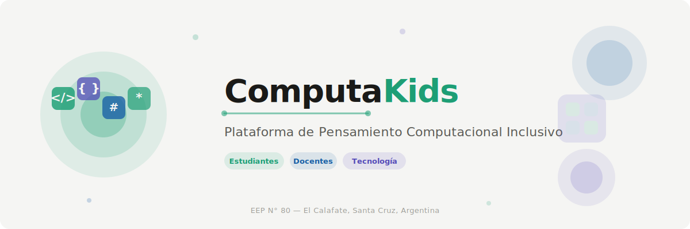

Plataforma de Pensamiento Computacional Inclusivo
Seleccioná tu rol para continuar. Cada sección está diseñada según los principios del Diseño Universal para el Aprendizaje.

Seleccioná tu rol para continuar. Cada sección está diseñada según los principios del Diseño Universal para el Aprendizaje.